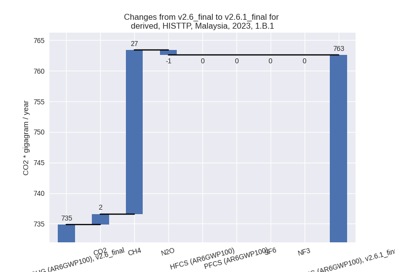

Change analysis for Malaysia for PRIMAP-hist v2.6.1_final compared to
v2.6_final
Overview over
emissions by sector and gas
The following figures show the aggregate national total emissions
excluding LULUCF AR6GWP100 for the country reported priority scenario.
The dotted linesshow the v2.6_final data.
The following figures show the aggregate national total emissions
excluding LULUCF AR6GWP100 for the third party priority scenario. The
dotted linesshow the v2.6_final data.
Overview over changes
In the country reported priority scenario we have the following
changes for aggregate Kyoto GHG and national total emissions excluding
LULUCF (M.0.EL):
- Emissions in 2023 have changed by -6.9%% (-26798.08 Gg CO2 / year)
- Emissions in 1990-2023 have changed by -1.6%% (-3845.46 Gg CO2 / year)
In the third party priority scenario we have the following changes
for aggregate Kyoto GHG and national total emissions excluding LULUCF
(M.0.EL):
- Emissions in 2023 have changed by -8.5%% (-32896.87 Gg CO2 / year)
- Emissions in 1990-2023 have changed by -9.6%% (-23035.18 Gg CO2 / year)
Most
important changes per scenario and time frame
In the country reported priority scenario the
following sector-gas combinations have the highest absolute impact on
national total KyotoGHG (AR6GWP100) emissions in 2023
(top 5):
- 1: 4, CH4 with -9557.07 Gg CO2 / year (-28.3%)
- 2: 2, CO2 with -6194.85 Gg CO2 / year (-15.7%)
- 3: 1.B.2, CH4 with -2879.95 Gg CO2 / year (-15.4%)
- 4: 1.A, CO2 with -2718.56 Gg CO2 / year (-1.0%)
- 5: M.AG.ELV, N2O with -2549.68 Gg CO2 / year (-40.2%)
In the country reported priority scenario the
following sector-gas combinations have the highest absolute impact on
national total KyotoGHG (AR6GWP100) emissions in
1990-2023 (top 5):
- 1: 4, CH4 with -2816.03 Gg CO2 / year (-11.7%)
- 2: 3.A, CH4 with -473.40 Gg CO2 / year (-22.1%)
- 3: 2, CO2 with -311.13 Gg CO2 / year (-2.1%)
- 4: 1.B.2, CH4 with -286.34 Gg CO2 / year (-1.4%)
- 5: 2, PFCS (AR6GWP100) with -274.61 Gg CO2 / year (-11.8%)
In the third party priority scenario the following
sector-gas combinations have the highest absolute impact on national
total KyotoGHG (AR6GWP100) emissions in 2023 (top
5):
- 1: 1.B.2, CH4 with -25565.24 Gg CO2 / year (-75.4%)
- 2: 4, CH4 with -4014.43 Gg CO2 / year (-24.1%)
- 3: 2, PFCS (AR6GWP100) with -1219.59 Gg CO2 / year (-43.2%)
- 4: M.AG.ELV, N2O with -875.89 Gg CO2 / year (-15.4%)
- 5: 2, SF6 with -752.12 Gg CO2 / year (-100.0%)
In the third party priority scenario the following
sector-gas combinations have the highest absolute impact on national
total KyotoGHG (AR6GWP100) emissions in 1990-2023 (top
5):
- 1: 1.B.2, CH4 with -19995.16 Gg CO2 / year (-67.4%)
- 2: 4, CH4 with -2674.93 Gg CO2 / year (-25.0%)
- 3: 2, SF6 with -126.53 Gg CO2 / year (-42.0%)
- 4: 2, PFCS (AR6GWP100) with -119.29 Gg CO2 / year (-12.6%)
- 5: 5, N2O with -70.86 Gg CO2 / year (-8.7%)
Notes on data changes
Here we list notes explaining important emissions changes for the
country.
- CRT from BTR1 covering 1990-2021 has been added. It replaces and
extends data from BUR4. This leads to lower emissions in several sectors
partly due to revised data and partly due to country reported data
replacing third party growth rates for 2020 and 2021.
- The most important change for the TP scenario is a reduction of CH4
in 1.B.2 of around 70% which comes directly from EDGAR data.
- 20% lower waste CH4 also comes from EDGAR.
Changes by sector and gas
For each scenario and time frame the changes are displayed for all
individual sectors and all individual gases. In the sector plot we use
aggregate Kyoto GHGs in AR6GWP100. In the gas plot we usenational total
emissions without LULUCF.
country reported scenario
2023
1990-2023
third party scenario
2023
1990-2023
Detailed changes for the
scenarios:
country reported scenario
(HISTCR):
Most important changes
per time frame
For 2023 the following sector-gas combinations have
the highest absolute impact on national total KyotoGHG (AR6GWP100)
emissions in 2023 (top 5):
- 1: 4, CH4 with -9557.07 Gg CO2 / year (-28.3%)
- 2: 2, CO2 with -6194.85 Gg CO2 / year (-15.7%)
- 3: 1.B.2, CH4 with -2879.95 Gg CO2 / year (-15.4%)
- 4: 1.A, CO2 with -2718.56 Gg CO2 / year (-1.0%)
- 5: M.AG.ELV, N2O with -2549.68 Gg CO2 / year (-40.2%)
For 1990-2023 the following sector-gas combinations
have the highest absolute impact on national total KyotoGHG (AR6GWP100)
emissions in 1990-2023 (top 5):
- 1: 4, CH4 with -2816.03 Gg CO2 / year (-11.7%)
- 2: 3.A, CH4 with -473.40 Gg CO2 / year (-22.1%)
- 3: 2, CO2 with -311.13 Gg CO2 / year (-2.1%)
- 4: 1.B.2, CH4 with -286.34 Gg CO2 / year (-1.4%)
- 5: 2, PFCS (AR6GWP100) with -274.61 Gg CO2 / year (-11.8%)
Changes in the main sectors for aggregate KyotoGHG (AR6GWP100)
are
- 1: Total sectoral emissions in 2022 are 276427.59
Gg CO2 / year which is 79.1% of M.0.EL emissions. 2023 Emissions have
changed by -1.9% (-5555.47 Gg CO2 /
year). 1990-2023 Emissions have changed by -0.0% (-55.64 Gg CO2 / year).
- 2: Total sectoral emissions in 2022 are 39694.67 Gg
CO2 / year which is 11.4% of M.0.EL emissions. 2023 Emissions have
changed by -17.2% (-8682.58 Gg CO2 /
year). 1990-2023 Emissions have changed by -3.3% (-599.53 Gg CO2 / year). For 2023
the changes per gas
are:
For 1990-2023 the changes per gas
are:
- M.AG: Total sectoral emissions in 2022 are 8229.23
Gg CO2 / year which is 2.4% of M.0.EL emissions. 2023 Emissions have
changed by -26.3% (-2915.70 Gg CO2 /
year). 1990-2023 Emissions have changed by -3.4% (-329.33 Gg CO2 / year). For 2023
the changes per gas
are:
For 1990-2023 the changes per gas
are:
The changes come from the following subsectors:
- 3.A: Total sectoral emissions in 2022 are 1527.04
Gg CO2 / year which is 18.6% of category M.AG emissions. 2023 Emissions
have changed by -25.6% (-519.00 Gg
CO2 / year). 1990-2023 Emissions have changed by -24.2% (-540.74 Gg CO2 / year). For 2023
the changes per gas
are:
For 1990-2023 the changes per gas
are:
There is no subsector information available in PRIMAP-hist.
- M.AG.ELV: Total sectoral emissions in 2022 are
6702.19 Gg CO2 / year which is 81.4% of category M.AG emissions. 2023
Emissions have changed by -26.5%
(-2396.71 Gg CO2 / year). 1990-2023 Emissions have changed by 2.9% (211.41 Gg CO2 / year). For 2023 the
changes per gas
are:
For 1990-2023 the changes per gas
are:
There is no subsector information available in PRIMAP-hist.
- 4: Total sectoral emissions in 2022 are 24168.28 Gg
CO2 / year which is 6.9% of M.0.EL emissions. 2023 Emissions have
changed by -27.7% (-9478.87 Gg CO2 /
year). 1990-2023 Emissions have changed by -11.5% (-2790.09 Gg CO2 / year). For 2023
the changes per gas
are:
For 1990-2023 the changes per gas
are:
- 5: Total sectoral emissions in 2022 are 838.18 Gg
CO2 / year which is 0.2% of M.0.EL emissions. 2023 Emissions have
changed by -15.6% (-165.46 Gg CO2 /
year). 1990-2023 Emissions have changed by -8.7% (-70.86 Gg CO2 / year). For 2023 the
changes per gas
are:
For 1990-2023 the changes per gas
are:
third party scenario (HISTTP):
Most important changes
per time frame
For 2023 the following sector-gas combinations have
the highest absolute impact on national total KyotoGHG (AR6GWP100)
emissions in 2023 (top 5):
- 1: 1.B.2, CH4 with -25565.24 Gg CO2 / year (-75.4%)
- 2: 4, CH4 with -4014.43 Gg CO2 / year (-24.1%)
- 3: 2, PFCS (AR6GWP100) with -1219.59 Gg CO2 / year (-43.2%)
- 4: M.AG.ELV, N2O with -875.89 Gg CO2 / year (-15.4%)
- 5: 2, SF6 with -752.12 Gg CO2 / year (-100.0%)
For 1990-2023 the following sector-gas combinations
have the highest absolute impact on national total KyotoGHG (AR6GWP100)
emissions in 1990-2023 (top 5):
- 1: 1.B.2, CH4 with -19995.16 Gg CO2 / year (-67.4%)
- 2: 4, CH4 with -2674.93 Gg CO2 / year (-25.0%)
- 3: 2, SF6 with -126.53 Gg CO2 / year (-42.0%)
- 4: 2, PFCS (AR6GWP100) with -119.29 Gg CO2 / year (-12.6%)
- 5: 5, N2O with -70.86 Gg CO2 / year (-8.7%)
Changes in the main sectors for aggregate KyotoGHG (AR6GWP100)
are
- 1: Total sectoral emissions in 2022 are 294313.29
Gg CO2 / year which is 85.5% of M.0.EL emissions. 2023 Emissions have
changed by -7.8% (-25567.79 Gg CO2 /
year). 1990-2023 Emissions have changed by -9.9% (-20011.46 Gg CO2 / year). For 2023
the changes per gas
are:
For 1990-2023 the changes per gas
are:
The changes come from the following subsectors:
- 1.A: Total sectoral emissions in 2022 are 281761.35
Gg CO2 / year which is 95.7% of category 1 emissions. 2023 Emissions
have changed by -0.0% (-29.58 Gg CO2
/ year). 1990-2023 Emissions have changed by -0.0% (-16.04 Gg CO2 / year).
- 1.B.1: Total sectoral emissions in 2022 are 733.04
Gg CO2 / year which is 0.2% of category 1 emissions. 2023 Emissions have
changed by 3.8% (27.73 Gg CO2 /
year). 1990-2023 Emissions have changed by -0.1% (-0.76 Gg CO2 / year). For 2023 the
changes per gas
are:

There is no subsector information available in PRIMAP-hist.
- 1.B.2: Total sectoral emissions in 2022 are
11818.90 Gg CO2 / year which is 4.0% of category 1 emissions. 2023
Emissions have changed by -68.4%
(-25565.94 Gg CO2 / year). 1990-2023 Emissions have changed by -60.4% (-19994.66 Gg CO2 / year). For 2023
the changes per gas
are:
For 1990-2023 the changes per gas
are:
There is no subsector information available in PRIMAP-hist.
- 2: Total sectoral emissions in 2022 are 24523.60 Gg
CO2 / year which is 7.1% of M.0.EL emissions. 2023 Emissions have
changed by -8.9% (-2604.68 Gg CO2 /
year). 1990-2023 Emissions have changed by -1.7% (-262.03 Gg CO2 / year). For 2023
the changes per gas
are:
- M.AG: Total sectoral emissions in 2022 are 11563.17
Gg CO2 / year which is 3.4% of M.0.EL emissions. 2023 Emissions have
changed by -4.8% (-575.92 Gg CO2 /
year). 1990-2023 Emissions have changed by -0.2% (-19.09 Gg CO2 / year). For 2023 the
changes per gas
are:
The changes come from the following subsectors:
- 3.A: Total sectoral emissions in 2022 are 2033.60
Gg CO2 / year which is 17.6% of category M.AG emissions. 2023 Emissions
have changed by 0.7% (13.06 Gg CO2 /
year). 1990-2023 Emissions have changed by 0.0% (0.79 Gg CO2 / year).
- M.AG.ELV: Total sectoral emissions in 2022 are
9529.57 Gg CO2 / year which is 82.4% of category M.AG emissions. 2023
Emissions have changed by -5.9%
(-588.97 Gg CO2 / year). 1990-2023 Emissions have changed by -0.2% (-19.88 Gg CO2 / year). For 2023 the
changes per gas
are:
There is no subsector information available in PRIMAP-hist.
- 4: Total sectoral emissions in 2022 are 12901.50 Gg
CO2 / year which is 3.7% of M.0.EL emissions. 2023 Emissions have
changed by -23.2% (-3983.01 Gg CO2 /
year). 1990-2023 Emissions have changed by -24.1% (-2671.72 Gg CO2 / year). For 2023
the changes per gas
are:
For 1990-2023 the changes per gas
are:
- 5: Total sectoral emissions in 2022 are 838.18 Gg
CO2 / year which is 0.2% of M.0.EL emissions. 2023 Emissions have
changed by -15.6% (-165.46 Gg CO2 /
year). 1990-2023 Emissions have changed by -8.7% (-70.86 Gg CO2 / year). For 2023 the
changes per gas
are:
For 1990-2023 the changes per gas
are: